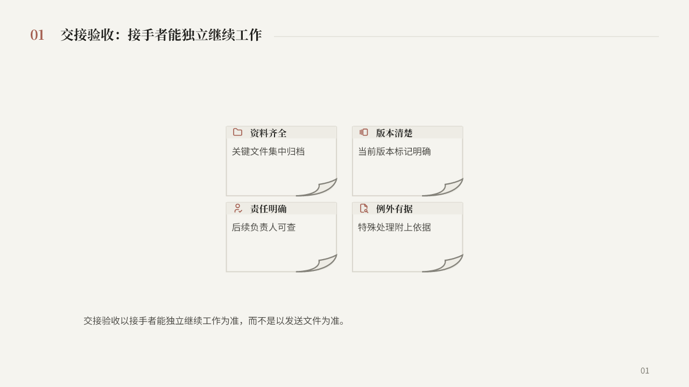
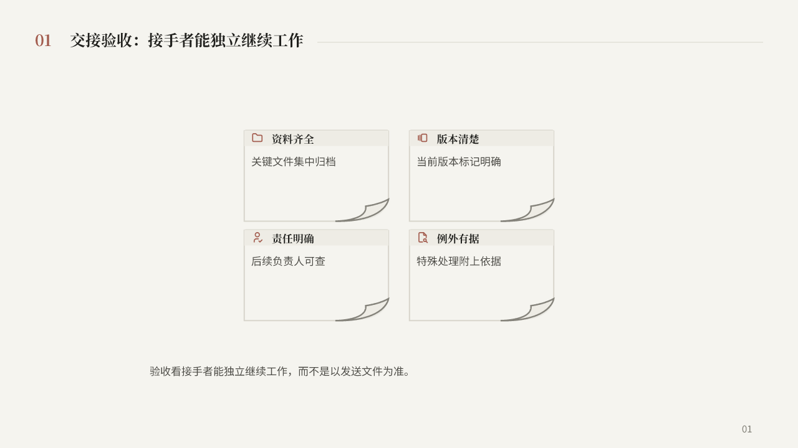
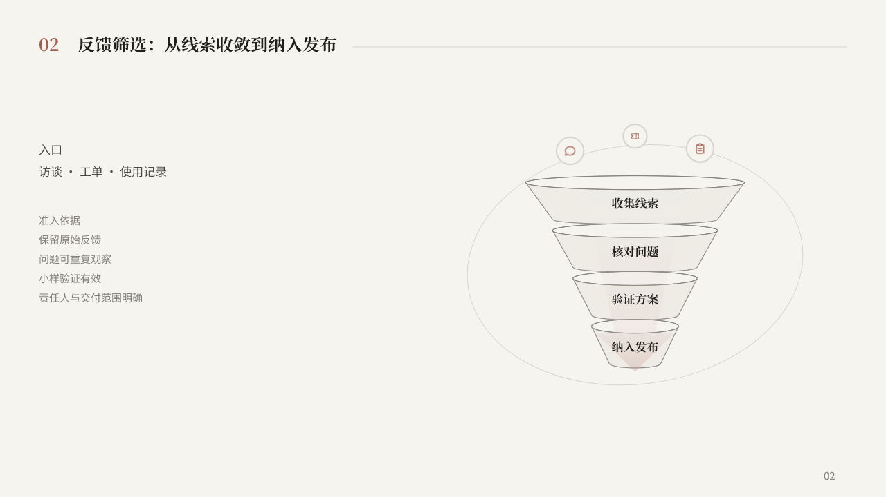
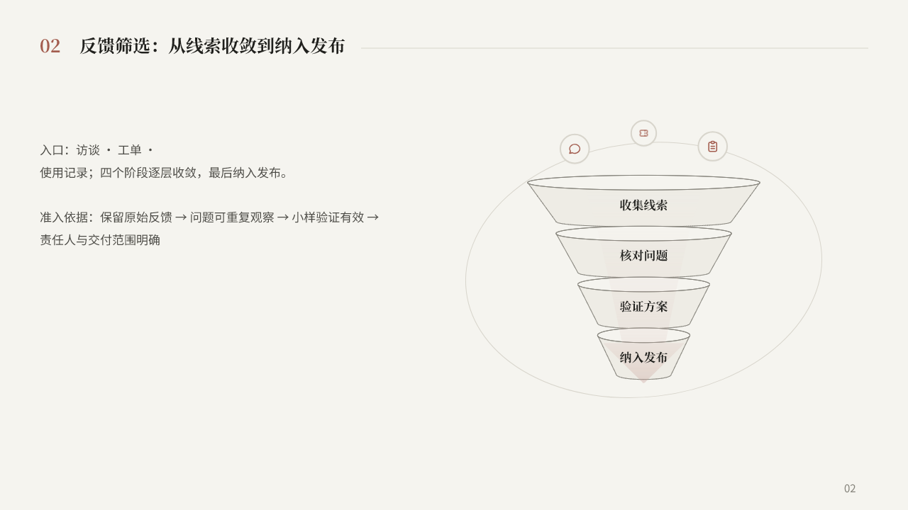
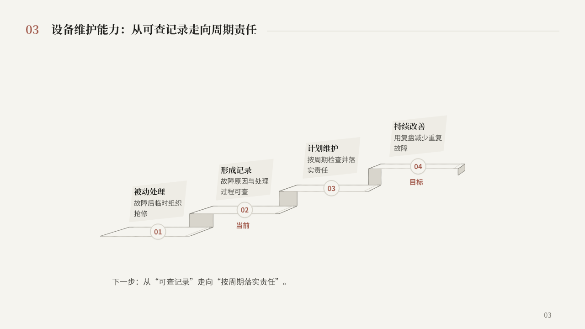
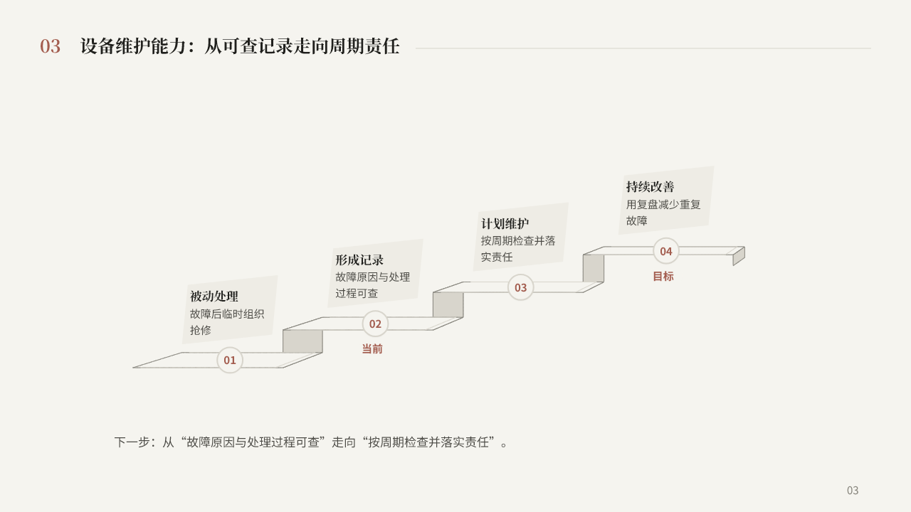

调用结构以后，整页是否排好了？
Luna high三页首稿整页验收0/3；父任务反馈后的第三稿，P3为通过候选，P1/P2仍需修订。调用成功不等于页面任务完成。
评价对象是完整页面。调用成功不代表通过；左右对照不是严格同稿盲测，具体信息分工变化见逐页说明。
验收协议 · 逐页审查 · 导出检查
P1 · 交接条件
整页结论：需修订
说明移到上方，减少了底部游离文字；但正文左边140与可见卡组左边约387不共轴，阵列仍悬于中部。；短说明对应的大卡片留白没有参与页面信息分组，仍判整页需修订。
- 四项条件、并列关系和交接验收的对照判断均保留。
- 说明移到上方，减少了底部游离文字；但正文左边140与可见卡组左边约387不共轴，阵列仍悬于中部。
- 短说明对应的大卡片留白没有参与页面信息分组，仍判整页需修订。
本轮首次与修订
首稿：父任务整页检查需修订

第二稿：保留过程记录，未单独作父任务视觉验收

P2 · 反馈筛选
整页结论：需修订
四条依据已拆成近似对应阶段的行，较首稿聚在一团改善。；左侧文字与漏斗之间距离仍大，图文缺乏清晰的共同阅读单元；最后一条与窄层的位置也不够准确。
- 访谈、工单、使用记录三个入口与四层准入条件完整，无虚构数据。
- 四条依据已拆成近似对应阶段的行，较首稿聚在一团改善。
- 左侧文字与漏斗之间距离仍大，图文缺乏清晰的共同阅读单元；最后一条与窄层的位置也不够准确。
本轮首次与修订
首稿：父任务整页检查需修订

第二稿：保留过程记录，未单独作父任务视觉验收

P3 · 维护能力与下一步
整页结论：通过候选
左侧全貌、右侧当前动作形成内容分工，较首稿在底部复述标题更清楚。；作为完整页面通过候选；右侧措辞仍可精简，尚未取得用户视觉确认。
- 四级全貌、当前02与目标04保留；行动说明明确当前2级转向下一步3级。
- 左侧全貌、右侧当前动作形成内容分工，较首稿在底部复述标题更清楚。
- 作为完整页面通过候选；右侧措辞仍可精简，尚未取得用户视觉确认。
本轮首次与修订
首稿：父任务整页检查需修订

第二稿：保留过程记录，未单独作父任务视觉验收

本轮3页受控样本，首稿后有父任务反馈。P3仅为通过候选，待用户查看；没有宣称自主排版稳定，也没有用父任务代画的页面冒充Luna结果。

{kind=link}
{kind=link}
{kind=link}
{kind=link}
{kind=link}